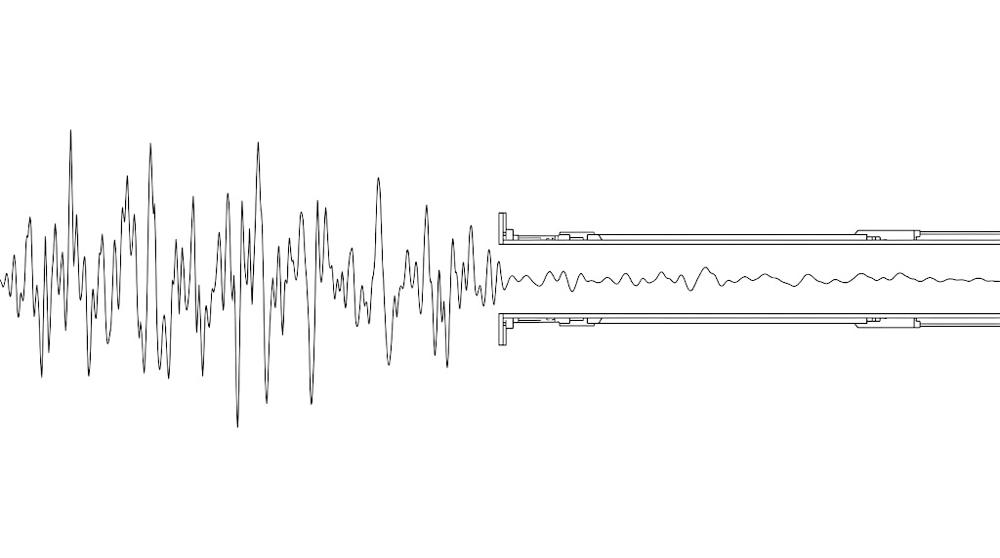

true peak limiter 在解決一個「估計出來的」問題，代價是改變你母帶真實的聲音。作者的替代方案是：別把所有東西都撞在天花板上，留 0.3 到 0.4 dB，然後把那段空間拿來用。
作者 Ryan Schwabe 是葛萊美入圍的混音與母帶工程師、Schwabe Digital 創辦人。文章出自他自家的教學站，結尾明說這套哲學正是他們正在開發的新 limiter 的基礎——機制的解釋可以獨立成立，但數值與「哪種比較好聽」是他的個人偏好，不是產業標準。本文最後一段有可以自己驗證的方法。
先把名詞弄清楚，後面才讀得下去。數位音檔存的是一個一個離散的取樣點，而 D/A converter 播放時要把這些點還原成一條連續的類比波形。還原的時候，那條曲線可能短暫地高過任何一個取樣點的電平——這個從取樣點縫隙裡冒出來的峰值，就叫 inter-sample peak。
它會冒多高，取決於三件事：那顆轉換器、它的重建濾波器、以及它的類比輸出級。關鍵在於——每一台裝置的答案都不一樣。
01true peak limiter 在做的是估計，不是量測
true peak limiter 的運作方式是：把訊號超取樣，套一個「類似 D/A 可能會用的」重建濾波器，去推算取樣點之間會發生什麼，再依那個推算值決定要壓多少。量測方法多半照 ITU-R BS.1770 這份國際規範。
作者的反對點就在這裡。世界上有無數種 D/A 設計，每一種的重建濾波器與輸出級都不同，卻要為了「單一一個估計模型」去改變母帶真實的聲音。而且他實測下來，多數 limiter 把 true peak 關掉反而更好聽：true peak 演算法對那些估出來的峰值反應更兇，會微妙地把 transient 磨鈍、重新塑形。
「關掉 true peak 更好聽」是他的聽感實測，文章沒有給對照資料。把它當成一個值得自己 A/B 一次的假設，不是已經確立的事實。
02問題是真的，但元凶常常被搞錯
你一定聽過：有人在限時動態分享自己的作品，聲音卻刺耳、糊掉、明顯失真。直覺會怪母帶做太滿，但作者指出主因在另一條路徑上。
你的 WAV 母帶上傳後，會被平台編碼成有損格式。有損編碼會改變波形，解碼時產生原本檔案裡沒有的新峰值；這些新峰值再經過手機或筆電的 D/A 與類比輸出級，如果那條播放路徑的餘裕不夠，就會聽到失真。
所以他做社群平台專用的母帶時，會留將近 2 dB 的 headroom。這聽起來很誇張，但社群平台的編碼器品質確實不好，在那個情境下多留餘裕的差別是聽得出來的。
03替代做法：兩顆 limiter 夾出一個窗
既然 inter-sample peak 的成因是「太多取樣點被推到接近滿刻度、transient 被壓平貼在數位天花板上」，那就從源頭降低這個條件，而不是事後再加一層演算法去猜播放端會怎樣。做法是把責任拆給兩顆 limiter。
對照參考值：Apple Digital Masters 建議留滿 1 dB（ceiling −1.0 dBFS）。作者認為那對一般發行過頭了，實務上 0.3 到 0.4 dB 就足以大幅降低重建峰值在 D/A 端出問題的機率。

全部撞在天花板上兩顆 limiter 夾出的窗04那個窗不是留白，是拿來用的
這是整篇最有意思的轉折。兩顆 limiter 之間那 0.3 到 0.4 dB，如果只是空著，你就只是單純少了 0.3 dB 的響度而已。但你可以在那個空間裡做輕微的 EQ、立體聲加寬、或動態處理，讓波形頂端重新產生起伏、長回一點 transient 的動態。萬一某個處理偶爾把峰值推過頭，最後那顆保護 limiter 會接住。
作者的取捨很明確：用 0.3 dB 的響度換這個窗帶來的聲音改善是划算的。與其去追最後那零點幾 dB，不如把它換成母帶裡的呼吸空間。
這篇講的是整條鏈的架構——要幾顆、ceiling 各設多少、中間留不留空間。想知道一顆 limiter 內部到底怎麼運作（三段式拓撲、lookahead 怎麼影響音色、哪些頻率能 clip 哪些不能），看 Uni-L：把「限制」變成可塑形的系統。兩篇立場一致，都反對把選擇權整包交給黑箱演算法。
05為什麼響度一推高，混音就變亮
最後這一段來自同作者的另一篇文章，講的是「窗裡到底要處理什麼」的關鍵機制，也是很多人長期誤判的一件事。
把全頻段 limiter 想成一個自動音量推桿：kick 和 bass 打下去的時候，低頻能量主宰了 limiter，於是整個訊號——包含中頻與高頻——被一起壓了下來；低頻音符結束、limiter 釋放，中高頻就整批浮上來。這個壓下去、放回來的循環反覆發生，久了就改變你聽到的平衡。
- limiting 或 clipping 量過大產生的諧波
- 解法：降低處理量、換處理方式、分頻處理
- 低頻打擊壓下全頻，釋放後中高頻整批浮出
- 解法：控制高頻的動態，或退一點響度
這就是那個 transient window 最常見的用途之一：在第一顆 limiter 做完響度之後、進最後保護關卡之前，補一層專門收拾高頻動態的處理，把 limiting 製造出來的亮度感壓回去。
—怎麼用在你身上
- 今天就能跑的一個實驗：拿一首你已經做完的曲子，用你常用的 limiter 開 true peak 與關 true peak 各 bounce 一次，A/B 聽 transient 有沒有變鈍。這是整篇唯一一個你在自己系統上就驗得出來的主張，不用相信任何人的說法。
- 把 ceiling 從單一數字改成一組架構：如果你現在是一顆 limiter 直接推到 −0.1 或 −0.3，可以試試拆成兩顆——第一顆 −0.4 做響度、第二顆 −0.1 純保護。就算中間先什麼都不放，你也已經拿到了「transient 不被壓平在天花板」的好處。
- 要發社群平台就另做一版：多留 1 到 2 dB 餘裕。你發到限時動態的那些片段，走的是跟串流平台完全不同的編碼路徑。
- 下次覺得母帶太刺：先問自己是失真還是亮度浮動。如果是後者，答案不在降低響度，而在控制高頻的動態。
- 留意這篇的動機：作者正在開發自家 limiter，這篇也是在鋪陳那個產品的設計哲學。機制的部分可以照收，數值當參考、不當標準。